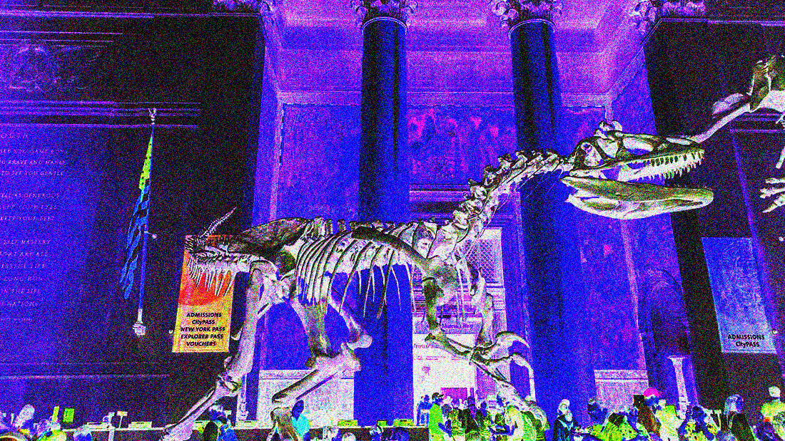

Sensory details - Subway to Museum
There are quite a few sensory details that I found myself fixated on in the subway. I was on my way to the American Museum of Natural History and had to hop on and off a few trains. Constantly looking at my google maps and rereading my next destination, there were small intervals in between where I would be at a new subway station for a couple of minutes. Each time, I noticed different sensory elements. For example, at my stop at Greeneley Square, there seemed to be more air currents and wind blowing in the specific spot I was standing at. There were less people around as well. This heavily contrasted from my initial starting spot at 14th St Union Square which can be overstimulating with a larger crowd of people and more trains overall. I specifically paid attention to the sounds of different subway stations. Conversations between people, the crushing sound of the train tracks when a train would pass, announcements on speakers, and the occasional singing or instruments from people that perform in the subways. While each subway has its own atmosphere, a lot of the sensory details overlap to create one collective sensory experience that encapsulates a crucial part of New York City.
There’s a stark difference between the sensory details of the outside park and walking into the museum. Being close in proximity to Central Park, there’s a very bright green color from the leaves that blends into the environment outside. It was a sunny day with a slight breeze. The museums high ceilings and large rooms felt very spacious which had a liminal or haunting feel. This was emphasized through the historical pieces of art throughout. Most of the lighting within the rooms was dim with brighter lights illuminating towards the artifacts on display. Most of the museum was cool with some rooms colder than others. There was a room near the Central America area that was playing a distinct type of music that had a wind chime feel, adding to the pieces and overall atmosphere. I found myself enjoying the space because of the intimacy created with the lights and being near an artifact or reading the text that accompanied some. At certain points there were crowds of people in smaller spaces which was slightly distracting. Ultimately, I reflected on the sensory experiences of museums as a whole and never realized how the different elements are mostly intentionally made to make people react or engage in a specific way.
